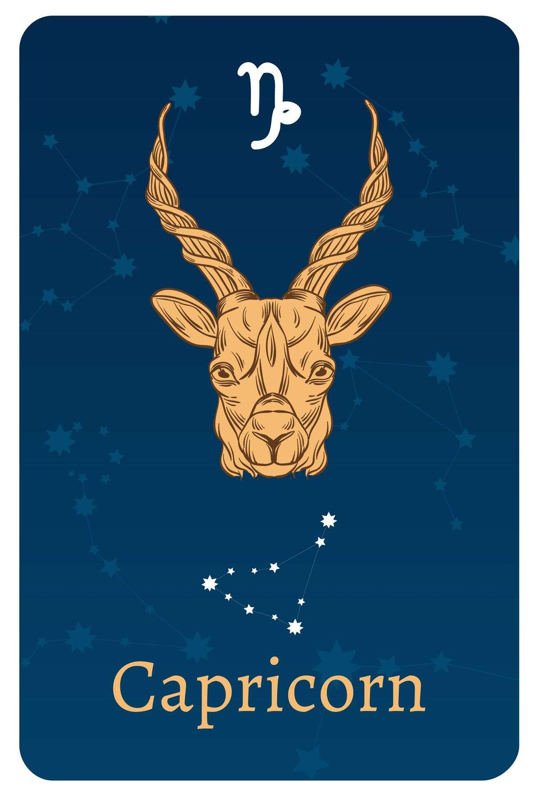

- Date Range : Dec 22- Jan 19
- Element : Earth
- Color : Charcol grey
- Quality : Cardinal
- Day : Saturday
- Ruling planet : Saturn
- Ruling house : Tenth
- Lucky number : 4,8,13,22
- Lucky gem : Garnet
- Top love Matches : Virgo
CAPRICORN (Dec 22- Jan 19)
Capricorn Personality Traits
Strengths : Responsible,disciplined,self-control,good managers
Weaknesses : Know-it-all,unforgiving,condescending,excepting the worst
capricon likes : Family,tradition,music,understand status,quality crasftmanship
Capricon dislike : Almost everything at some point
Capricorn is a sign that is associated with time and responsibility. Capricorn individuals are typically traditional and serious in nature, possessing an inner sense of independence that allows them to make significant progress in both their personal and professional lives. They are skilled in self-control, can make realistic plans,and are capable of managing many people at once. Capricorns learn from their mistakes and rely on their experience and expertise to achieve success.
Belonging to the Earth element, like Taurus and Virgo, Capricorns are
the last sign in the trio of practicality and grounding. They are
focused on the material world and are adept at using its resources.
However, this element can also make them inflexible and stubborn,
particularly in their relationships. They may struggle to accept
the differences of others that are too far from their own character,
and out of fear, may try to impose their own traditional values.
he ruling planet of Capricorn is Saturn, which represents all forms of
restriction. While its influence makes Capricorns practical and responsible,
it can also make them cold, distant, and unforgiving. They may struggle with
feelings of guilt or rride and become fixated on the past. To lighten
their own lives and become more positive, Capricorns need to learn to forgive.
Capricorn Love Style
Ruled by strict Saturn, Capricorn knows, expects, and even relishes the tough parts of relationships. They are in it for the long haul, and know the best relationships have storms. It’s not as if they are fatalistic—but Capricorn's love is realistic and they aren’t going to have a rosy view of romance.
That said, Capricorns are expansive and generous in love, and adore being wined and dined. They love the formality of early dating, and may be quite strict about following “the rules” of romance—even if those rules are made up. Typically, they may follow gender norms of dating, expecting the man to call first and the man to pay on the first date, but Capricorn isn’t strict, and is always willing to consider another path or another way. Capricorns can be regimented, and love having a specific night of the week for date night. Capricorns thrive on routine, and may love staying at home on weekends, under the covers, with nothing but them and their lover. Capricorns love spending time only with their lover, especially in the early stages of a relationship, which can be frustrating to their friends and family. Capricorns are serious monogamists, and although they can be cautious in every other aspect of their lives, they are the sign who is likely to fall deeply in love with someone, and it’s not unusual for a Capricorn to get married after only several months of dating. They know their hearts well, and don’t hesitate to lock things down when they know that the relationship is right. And their instincts are on point—loyal Capricorns stay in relationships for the long haul. They aren’t afraid oftherapy if their relationship needs help, and approach problems as a bump in the road, capable of fixing with honesty, trust, and hard work from both partners.
Capricorn Friendship Style
Loyal, loving, and all about tradition, inside jokes, and the shared stories that make up friendship, Capricorn takes friendships incredibly seriously. They love taking care of their friends, and may make dinner, clean their closet, or use whatever their Capricorn strengths are to help make their friends lives better. Capricorn pushes their friends to the max, and isn’t afraid to let their friends know if they are disappointed in their actions and behaviors. Capricorn will not let bad behavior go unnoticed, and will gently call out a friend who may have forgotten a birthday, complete with a reminder—like a gift of a calendar—to ensure it won’t happen again. A Capricorn knows that they may not always be the “fun” friend—if they go on a friend trip or bachelor or bachelorette party, they want to be in bed by ten—but they also know that they bring some pretty great gifts to the table. A Capricorn inspires and challenges their friends, and expects the same in return.
Three reasons why Capricorn make great friends
- They are loyal. They will always have your back, even if they don’t agree with what you are doing. They may get a bit parental in giving you lectures, but it’s only because they care and want what is best for you.
- They remember everything. When you come to their house, your favorite wine is chilling, and they never have to guess your shoe or shirt size for birthdays. They remember the names of every family member and every ex—for better or worse—and you sometimes feel like they know your history even better than you know your own.
- They recognize your gifts and strengths. Sometimes, it feels like the Capricorn in your life is a therapist/guidance counselor, but they can push you to where you want to be, even providing action plans and checklists for how to get there.
Capricorns are amazing! Their name says it all:
C for confident
A for analytical
P for practical
R for responsible
I for intelligent
C for caring
O for organized
R for realistic
N for neat
Capricorn career, money & success traits
Capricorn's greatest career strength: Determination. A Capricorn will push themselves beyond their limits to get a job done on time. A Capricorn will not take “no” for an answer, either from themselves or from an underling, and knows that there is always a way to do the impossible.
Capricorn's greatest career challenge: Rigidity. Capricorn can follow the rules of a job to a T, but may be passed over for promotions because they may not think outside the box. Capricorns are staid rule followers, and may need to work on thinking beyond the boundaries of a job or task to truly prove their leadership and innovation potential.
Capricorns are known for setting high standards for themselves
and are characterized by their honesty, dedication, and perseverance.
They value loyalty and hard work above all else and tend to keep
those with these qualities close, even if they are intellectually
inferior. Capricorns are concentrated and resourceful individuals
who get the job done and are willing to commit completely to the
final product, even if it requires long hours. They excel in management,
finance, programming, and calculations. Deeply rooted in tradition,
the state, and the system they live in, Capricorns prioritize having
all their paperwork in perfect order, their documents clean, and their files impeccable.
Money is highly valued in the lives of Capricorns. They tend to
manage it well and save for a rainy day, as long as their debts
do not consume their actual abilities. Capricorns are hard workers
who strive for a higher cause, and they will do everything in
their power to become debt-free, whether it is from loans or mortgages,
knowing that true success will only come in the long run.

Motto
"I can succeed at anything I put my mind to."
Famous Capricorn

Zayn Malik
(Singer)
January 12, 1993
Capricorn
January 12, 1993
Capricorn

Nicolas Cage
(Actor)
January 7, 1964
Capricorn
January 7, 1964
Capricorn

Jim Carrey
(Actor)
January 17, 1962
Capricorn
January 17, 1962
Capricorn
Join Our Daily Overview
Your Astrological overview guides you on what to look out for and how to act in tune with the stars and planets each day.
Was this page helpful?
Do not selling My personal info!
© Copyright-2023 -All right reserved.